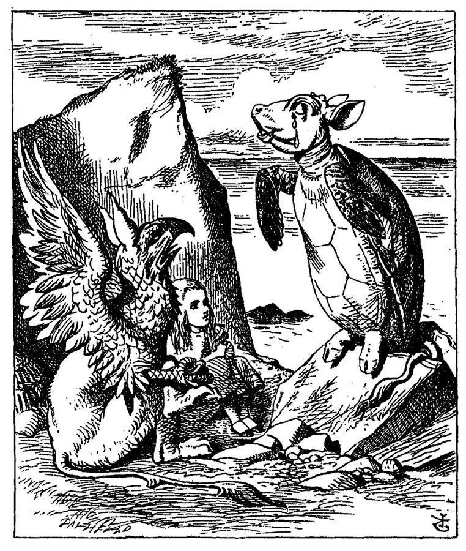
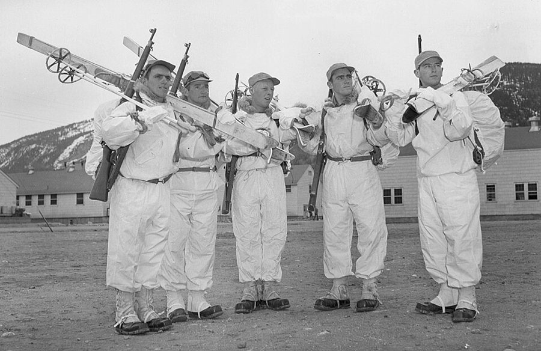
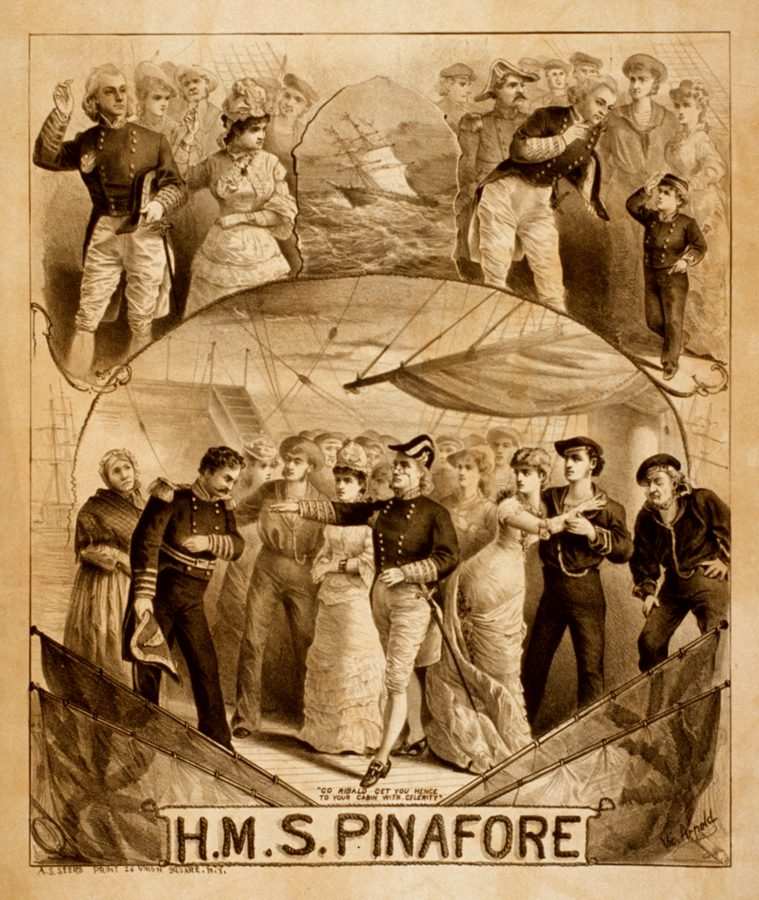

这一章在做什么
上一章停在 Dan 觉得冷。这一页从一串梦开始：头九段里人脸会换、地点会跳、Dan 没手没脚，是故意写乱的，别当实事读，认出梦里拼进来的是哪些旧人旧事就行。
第十段起换成一间陌生的病房，性质是适应新环境 ：一场和医生的长对话，一顿早饭，一份报纸。
难点两处：梦里的歌词和双关；报纸上一批作者自造、故意不解释的新词，Dan 自己也看不懂，你不用查。抓 Dan 的情绪怎么一段一段变。

《爱丽丝漫游奇境》里的假海龟（Mock Turtle）在唱歌。这一页第一段里酒保哼的那一句，就是照它的歌改的，见下面「背景」。
John Tenniel 绘，取自 1869 年德文版，公有领域，维基共享资源 人物
只写到上一章结束时你知道的。头一个场景是梦，梦里的酒保、医生、军士长都不是真人。
Dan Davis 叙述者「我」 上一章被 Belle 打了药、下了指令，由她冒充姐姐送进 Sawtelle 的冷眠库。合同上的保险公司已经被她改成了另一家。
Pete 只在梦里和念头里 Dan 的猫。上一章抓伤了 Miles 和 Belle，从纱门跑了，之后没人见过它。
Belle Darkin 没出场 Dan 的前未婚妻，如今是 Miles 的妻子。这一页里她只是一张脸、一个名字。
Miles Gentry 只提到 Dan 从前的合伙人，律师。
Ricky 只提到 Frederica，Miles 的继女，1970 年时十一岁。Dan 入睡前把自己的 Hired Girl 股票寄给了她，交银行代管。
护士新 没有名字 场景 3 出场，只有几句话。
Dr. Albrecht新 医生 场景 4 从头到尾是他和 Dan 的对话。
Mrs. Schultz新 只提到 有人给 Dan 留了话，留的是这个名字。
场景地图
这一页是第 5 章的第 1–104 段，本站按场景分成 7 段。粗体是每个场景开头的几个词，照着它在书里找位置；读完一个场景回来打个勾。
I WAS COMPLAINING to the …约 550 词 梦。地点乱跳，几张脸叠在一起。留意梦里谁在拦他、谁在帮他。 HE NO MORE than got …约 500 词 从半醒到全醒，全是内心独白。留意他先想起什么，隔了多久才想起另一件。 I FOUND THAT I was …约 450 词 一间病房。前半是工程师打量设备，后半是和护士的几句硬话。 “Good morning,” he said. “I’m …约 1150 词 和医生的长对话，全页最密的一场。留意医生嘴里哪些词是 Dan 没听过的。 I decided that he was …约 850 词 早饭送到。Dan 话少，看得多；后半有一长段关于「工程」的议论。 But in spite of a …约 600 词 读报。新闻分三类：照旧的、猜得出的、完全不懂的。自造词扫过去。 But the most intensely interesting …约 600 词 报上的广告，接着是一长段心事。留意他怎么算一个人的年纪。
背景：作者默认你知道的事
都是真实世界里的东西。头一个场景的梦是用歌词、酒名和军营拼起来的，不知道出处就只剩一团乱。按在书里出现的顺序排。
场景 1 「Soup of the evening, beautiful Soup」《爱丽丝漫游奇境》（1865）第十章，假海龟哭着唱一首赞美汤的歌，这是副歌，英语国家的孩子都会背。梦里的酒保把最后一个 Soup 换成了 sleep。
《爱丽丝》本身是一场梦，海因莱因拿它开头，等于告诉读者：下面这几段别当真。
场景 1 梦里的酒吧：Tom and Jerry、hot buttered rum、brass railTom and Jerry 在这里不是猫和老鼠，是一种圣诞前后喝的热鸡尾酒：蛋奶糊加朗姆酒和白兰地，兑热牛奶或热水。hot buttered rum 是热黄油朗姆酒，也是冬天的热饮。
brass rail 是老式吧台脚下那根黄铜横杆，站着喝酒的人把一只脚踩在上面。Dan 梦里嫌冷，所以要的全是热酒。
场景 1 bum 的三个意思和「Throw the bum out!」bum ：流浪汉；没出息的家伙；（英式）屁股。Throw the bum out! 是美国棒球场看台上骂裁判、骂臭球员的老话，「把这废物轰出去」。
梦里 Dan 把 rum 说成了 bum，接话的人顺势骂了他两句。
场景 1 Camp Hale 和雪地训练
二战期间，第 10 山地师的士兵在科罗拉多州的 Camp Hale。白衣服是雪地伪装。
美国陆军摄，公有领域，维基共享资源 科罗拉多州落基山里的陆军营地，海拔约 2800 米，1942 年为训练山地部队而建：滑雪、攀岩、雪地行军。basic training 是新兵的基础训练。
Dan 当过兵（第 2 章），梦把他送回了最冷的那段日子。GI 是美国大兵，pack mule 是驮东西的骡子。
场景 1 「I ain’t got nobody」1915 年的流行歌，歌名就是头一句，下一句是「也没人在乎我」，自怜的调子，后来成了爵士乐的常备曲目。梦里 Dan 发现自己连身体都没有了，把 nobody （没有人）拆成了 no body （没有身体）。
Look, Ma, no hands! 则是小孩撒开车把骑自行车时喊的话：「妈你看，我没用手！」
场景 2 棒球转播里的叠影
远景 long shot：整个内场
本垒
一垒
二垒
三垒
投手丘
特写 close-up：投手
windup：
抬腿举臂
蓄力
导播把右边的人影半透明地叠在左边的全景上，一起播出
本站示意图。棒球的内场是个菱形，所以叫 diamond ；投手（pitcher）站在正中的土丘上，投球前那一套蓄力动作叫 windup 。
1950 年代的电视转播爱用「叠印」：一台摄像机拍全场，一台拍投手特写，两个画面同时出现在屏幕上，特写像个鬼影浮在全景上。Dan 用这个画面打了一个比方。
场景 4 两句过期的话The War to End War （终结一切战争的战争）是第一次世界大战时的口号，二十年后又打了一场更大的，这句话从此只能反着用。
Twenty-three, skiddoo! 是 1900 年代到 1920 年代的美国俚语，意思是「快走开」「溜吧」。到 1950 年代，它已经是祖父辈的话，一说出口就显得老。
场景 5 Langley 教授和达·芬奇
1903 年，波托马克河上，Langley 的 Aerodrome 从船屋顶上弹射出去。两次试飞都直接掉进了河里。
作者不详，公有领域，维基共享资源
Samuel Langley 是天文学家，史密森学会的掌门人，拿着政府的钱造载人飞机。1903 年 10 月和 12 月两次试飞都失败；第二次失败之后九天，莱特兄弟飞起来了。
达·芬奇在十五世纪画过扑翼机和直升机的草图，当时没有任何发动机能带动它们。Dan 用这两个人说同一件事。
场景 6 美国报纸标题的写法
2020 年 12 月 13 日夏威夷上空的双子座流星雨。长时间曝光，密密的斜线是星轨，几道方向不同的亮线是流星。
International Gemini Observatory/NOIRLab/NSF/AURA，CC BY 4.0，维基共享资源
标题省冠词、省 be 动词，用现在时，爱用短词：Solon （本是古雅典的立法者梭伦）代指议员，Perils 当动词用是「危及」，N.Y. 是纽约。
Double-Header 是同两支棒球队一天连赛两场。Geminids 是双子座流星雨，每年 12 月中旬出现。书里的标题都按这个规矩写，读的时候自己把省掉的词补回去。
场景 6 WAC、Sandia、curieWAC 是美国陆军妇女队（Women’s Army Corps），也指其中的女兵。Sandia 是新墨西哥州的核武器基地，Dan 当兵时待的地方（第 2 章）。
curie （居里）是放射性活度的单位，以居里夫妇命名。
场景 7 「his sisters and his cousins and his aunts」
1879 年美国上演《皮纳福号军舰》的海报。
A. S. Seer’s Print，1879，公有领域，维基共享资源 吉尔伯特与沙利文的喜歌剧 H.M.S. Pinafore （1878）里，海军大臣走到哪儿都带着一大群女眷，合唱反复唱「他的姐妹、表姐妹和姑姑阿姨们」。
这句话后来成了「一大家子全来了」的俏皮说法。
书里的世界
从场景 3 起，Dan 眼里的每样东西都是 1956 年的作者替 2000 年想出来的。下面这些是设定，不是历史；有一批词连 Dan 也不懂，作者就没打算让你懂。
1956 年想象的 2000 年
真实世界里
听口令干活的机器护工
语音助手，2011 年以后
碰一下角就翻页的报纸
电子墨水阅读器，2007 年
同步轨道上的载人站
国际空间站，低轨道，2000 年驻人
酵母做的「培根」
各种素肉
去月球的定期航班
1972 年以后没人再去过月球
本站示意图。左边的东西各在哪个场景出现，见下表。
书里的说法 在书里是什么 真实世界里 subtemperature / the Sleep / Sleeper 2000 年对冷眠的叫法。第一个商业客户 1965 年 12 月入库；现在的合同最长签到一百五十年。 见第 1 章：至今做不到。 hypnology, resuscitation 医生的专业：催眠学和唤醒术。冷眠靠药、催眠和降温三样（第 2 章），唤醒也就成了一门专科。 resuscitation 在现实里是「复苏、抢救」。 entrance year / adjustment vocabularies entrance year 是入睡的年份。库房按年份给醒来的人备好词汇表和历史文化摘要，帮他们补课。 — SERVICE CALL 床边桌上的压力开关，一碰，对面一块透明板亮出字来。从前那个梨形的呼叫按钮没有了。 — 挥一下就着的香烟 不用火，在空中一晃就点着了。书里没解释。 没有这种烟。 grabbie 医生说现在不叫 movie 了，叫这个，看的时候要系安全带。为什么，他没说。 — null, lackweight, hypnostudy 医生顺口说出来的 2000 年新词，都没解释。hypnostudy 按字面是「催眠学习」。 作者造的词。 Eager Beaver 医院里的护理自动机，Aladdin 公司出品。听短语口令干活，身上挂着一张口令卡。 2000 年没有这样的机器。能听懂人话的语音助手 2011 年以后才普及；医院里送药送餐的机器车倒是有了，见下图。 grilled yeast strips 早饭菜单上的一项，酵母做的，样子像培根。 用植物蛋白、真菌蛋白做的素肉如今是寻常商品。 the Great Los Angeles Times 报纸。小开本，光面纸，彩色或立体图片，碰一下右下角自动翻页。城市的名字前面多了个 Great。 《洛杉矶时报》是真的，1881 年创刊。碰一下翻页的阅读器 2007 年以后才流行。 Luna shuttle / Twenty-Four-Hour Station 去月球的班机，和一座「二十四小时站」：绕地球一圈正好一天的轨道站。 那条轨道叫地球同步轨道，上面只有卫星。国际空间站在低得多的轨道上，2000 年 11 月开始常年有人。 host-mothers 标题里一群要求涨价的人，嫌「业余的」抢生意。按字面是替别人怀孩子的母亲。 第一个试管婴儿 1978 年出生；替别人怀别人胚胎的代孕，1980 年代中期才有第一例。 Anti-Zombie Law 一条法律的名字。上一章 Dan 挨的那一针叫什么，你还记得。 — wogglies, Poudre Sanitaire, Leycoils, Teddies, nark, subspeck 报上的词。Dan 一个也不懂，书里一个也没解释。 作者造的。科幻的老手法：未来的报纸本来就该有你看不懂的词。 commitments / withdrawals 报纸「生死婚嫁」栏里新添的两栏：谁入库冷眠，谁出库。按库房分列。 —
真实世界里的医院机器人：一台自己坐电梯送东西的机器车，门上写着「货梯，机器人优先」。它不会倒咖啡，也听不懂人话。
照片：Mikael Häggström，CC0，维基共享资源（2024 年摄于美国康涅狄格州一家医院，与本书无关） 这一章的行话，先用中文过一遍
场景 5 和场景 7 各有几句话要用到专利和公司的常识。概念只有一个要先弄懂：专利是有期限的。
专利的保护期：从授权那天起 17 年
授权
granted
过期
expired
独占 17 年：别人用要付钱
归公：谁都能用
还没有专利
一项专利的一生
本站示意图。美国专利当时的规矩：自授权日起 17 年。1995 年以后改成自申请日起 20 年。
专利（patent）是国家给发明人的一段独占期：期内别人要用得付钱，期满之后发明归公，谁都能照着造。它像一份带过期时间的许可证，不像版权那样动辄管上百年。
专利可以转让 （assign）给别人或公司，转让之后收钱的就是受让人。机器的铭牌上通常印着它用到的专利号。
英文 中文 一句话 patent / grant 专利 / 授权 grant 作动词是「批准、授予」。专利从 granted 那天起算。 expire 到期失效 证件、合同、专利过期都用它。 assignment 转让（书） 把股票、专利的所有权签给别人。不是「作业、任务」。 data plate 铭牌 钉在机器上的小金属牌，印着型号、序列号、产地、专利号。 serial number 序列号 每台机器一个号。 trademark 商标 和专利不同，只要一直在用就不过期。 letterhead 信笺抬头 公司信纸顶上印的名称、地址和标志。 daughter corporation 子公司 现在更常说 subsidiary。 stock / portfolio 股票 / 投资组合 portfolio 是一个人手里全部投资的总称。 display advertising 图片广告、大幅广告 和一行行小字的分类广告（classified）相对。
词与短语
词条按在书里出现的顺序排，按场景分组。斜体小字是它所在的那句话里的几个词，方便你在书里找到。
场景 1 I WAS COMPLAINING to the …
soup of the evening, beautiful sleep
… soup of the evening, beautiful sleep.” …
「黄昏的汤，美妙的睡眠」
改自《爱丽丝》里假海龟的歌，原句最后一个词是 Soup。见「背景」。
Tom and Jerry
… “A Tom and Jerry? Or a …
一种热的蛋奶鸡尾酒
不是猫和老鼠。酒名在先，动画片在后。
hot buttered bum
… Or a hot buttered bum?” …
「热黄油流浪汉」
酒名是 hot buttered rum。梦里舌头打滑，rum 成了 bum。
bum
… “You’re a bum!” the doctor answered. …
没出息的东西，废物
接上一句的口误。说话的 the doctor 多半是第 1 章训过他的那位体检医生，梦里人说换就换。
throw the bum out
… for him; throw the bum out!” …
把这废物轰出去
棒球看台上的骂人话。too good for him：便宜他了。
brass rail
… feet around the brass rail to stop …
吧台下面的黄铜踏脚杆
hook my feet around：用脚勾住。
Look, Maw, no hands!
… either. “Look, Maw, no hands!” Pete sat …
「妈你看，我没用手！」
小孩炫耀的话。Maw 是 Ma 的土音。这里 Dan 是真的没有手。
basic training
… was back in basic training...advanced basic, it …
新兵基础训练
advanced basic 是基础训练的后半段，分兵种的那部分。
make a man of you
… neck to make a man of you. …
把你练成个男子汉
军队里的口头禅。Dan 说得很不屑。
pack mule
… used instead of pack mules and I …
驮货的骡子
pack 是行军背包，也是牲口驮的货。
expendable
… picked because I was expendable. I …
可以牺牲掉的
军语：损失了也不心疼的人员、装备。expend 是消耗。
make it
… I wouldn’t have made it at all …
爬到（山顶），办成
下一段军士长说的 whether you make it or not 是同一个用法。
top sergeant
… The top sergeant turned and he …
连里的军士长
口语，指一个连里军衔最高的士官，管全连士兵的那个人。
livid with rage
… he was livid with rage. “Come on, …
气得脸色发青
icy warm
… it was icy warm and I did …
冰凉而又暖和
自相矛盾的搭配，梦里才有。
a Hired Girl
… anyhow a Hired Girl with her face …
一台 Hired Girl（扫地机）
Dan 发明的那种机器：比弹珠大的东西它捡起来放进顶上的托盘（第 2 章）。梦里它捡的是金子。
I ain’t got no body
… “I ain’t got no body, and nobody …
「我没有身体」
歌词原文是 nobody。ain’t got no 是双重否定表示否定，土话。见「背景」。
harness
… them put the harness back on me …
（牲口的）挽具
接着骡子的比方。put the harness on 也指「套上去干活」。
rosy tip
… climb to the rosy tip they would …
粉红色的尖顶
又白又圆的山，粉红的顶：梦把雪山和女人的身体叠在了一起。
no nothing
… hands, no feet, no nothing. …
什么都没有
口语里收尾的双重否定，加强语气。
场景 2 HE NO MORE than got …
no more than … before
… HE NO MORE than got me awake …
刚……就……
= no sooner … than。他刚把我弄醒，就又要我睡。
listless
… except for that listless half-floating feeling …
懒洋洋没力气的
Turkish bath
… have after a Turkish bath. I …
土耳其浴（蒸汽浴）
蒸完之后人发软、发飘。
shenanigans
… to forget her shenanigans, either the …
鬼把戏
had not taken
… the orders had not taken or thirty …
没起作用
take 作不及物动词：（疫苗、染料、嫁接）「起效、着上」。
wash out
… cold sleep had washed out the hypnotic …
冲掉，洗掉
shanghai
… how they had shanghaied me. …
把人弄昏了强行送走
十九世纪的水手黑话：把人灌醉或打晕，拖上远洋船当苦力，那些船常是开往上海的。
a pitcher making his windup
… a pitcher making his windup while his …
投手在做投球前的蓄力动作
pitcher 不是水罐。见「背景」的图。
long shot
… a long shot of the whole …
远景镜头
摄影术语。日常说 a long shot 是「希望不大的事」，这里不是。
baseball diamond
… the whole baseball diamond? Something like …
棒球内场
四个垒围成菱形。
look up
… intended to look up Belle and Miles …
找上门去
look someone up：去找某人。不是「查资料」，也不是「抬头看」。
chop them into cat meat
… and chop them into cat meat, but …
把他们剁成猫食
cat meat 是喂猫的碎肉。
would do
… Next year would do—right now …
也行，够了
do 作不及物：「合用、行」。That will do.
poor little beggar
… unless the poor little beggar hadn’t lived …
可怜的小家伙
beggar 在这里是带怜爱的「家伙」，不是乞丐。
the “Hold” basket
… out of the “Hold” basket and moved …
「暂缓」文件筐
办公桌上分类放文件的筐：Hold 暂缓，Urgent 加急。Dan 把仇人当待办公文挪了个筐。
…, would they?
… to kill my cat, would they? …
他们竟敢……是吧？
句首省了 They would。句尾的反问是咬牙的口气。
turn him out
… they had turned him out to go …
把它赶出门
go wild：变成野猫。
pixie
… his sweet pixie nature warped into …
小精灵似的（调皮可爱）
warp into：扭曲成。
desert
… thinking that I had deserted him. …
抛弃
动词，重音在后。和「沙漠」同形不同音。军队里是「开小差」。
unspeakable
… they were still alive—unspeakable! …
坏得说不出口的（东西）
他气得找不到词骂了。
场景 3 I FOUND THAT I was …
plumbing
… some sort of plumbing under it which …
管路
本义是房子里的上下水管。
bedpan
… was a mechanized bedpan, and the …
床上用的便盆
pear-shaped switch
… find the pear-shaped switch which summons …
梨形的呼叫按钮
老式病房里一根电线吊着的那种。summon：召唤。
transparency
… and a transparency opposite where my …
一块透明的显示板
可数名词：透明片、幻灯片。不是抽象的「透明度」。
reasonably cute
… one was reasonably cute, had the …
还算好看
reasonably + 形容词 =「还算、相当」。
drill sergeant
… manners of a drill sergeant, wore a …
操练新兵的教官
出了名的凶。梦里是军士长，醒来是教官。
strangely cut
… It was strangely cut and covered …
剪裁很怪
cut 指衣服的裁法、款式。
over twenty-one
… free citizen, over twenty-one, and not …
已经成年
当时美国的法定成年年龄是 21 岁。「我是成年的自由公民」是美国人顶嘴时的标准开场。
the way I am
… go out the way I am and …
就这副样子（穿着睡衣）
duck out of her way
… the door ducked out of her way. …
（门）一闪给她让了路
duck 是猛地一躲。把自动门写成了会躲人的活物。
study out the gimmick
… to study out the gimmick, being fairly …
琢磨出其中的机关
gimmick：小机关、窍门。Dan 的常用词。
dream it up
… could dream it up, another could …
想出这个点子
dream up：凭空想出。figure out：弄明白。一个工程师想得出，另一个就看得懂。
场景 4 “Good morning,” he said. “I’m …
a cross between … and …
… like a cross between a Harlem …
……和……的混合体
cross 是杂交种。
a Harlem Sunday
… between a Harlem Sunday and a picnic …
哈莱姆的礼拜天（盛装）
Harlem 是纽约的黑人聚居区，礼拜天上教堂穿得最鲜亮讲究。1950 年代白人作者的写法，带着那个年代的眼光。
drop the habit
… had dropped the nicotine habit somewhere …
把（烟）瘾丢了
Thanks just the same
… years. “Thanks just the same.” …
不用了，还是谢谢你
谢绝时的套话。
make the comeback
… patients make the comeback from hypothermia …
回到（正常生活）
comeback 多指过气的明星、输球的队伍「卷土重来」。
another sort of institution
… off to another sort of institution. …
另一种机构
委婉语，指精神病院。
one-way ticket
… is a one-way ticket and it’s …
单程票
attend to
… you must attend to it right …
去办，去处理
不是「出席」。
blurt out
… started to blurt out that it …
脱口而出
sheepish
… stopped and looked sheepish. “Maybe not …
讪讪的，不好意思
gallop off in all directions
… go galloping off in all directions? …
没头没脑地四面乱冲
一个人不可能同时朝四面八方跑。出自加拿大幽默作家 Leacock 的名句：某人跳上马，「朝所有方向狂奔而去」。
pull them down off the ceiling
… pull them down off the ceiling.” …
把他们从天花板上拽下来
夸张：有的人醒来闹得能上房。hit the ceiling 是「暴跳如雷」。
orderly
… Send a room orderly with breakfast, …
（医院的）护工
名词。军队里是勤务兵。和形容词「整齐的」同形。
pickup
… the pickup he pushed against …
（听诊器贴在身上的）探头
工程师的叫法：拾取信号的那一头，像唱机的拾音头。不是皮卡车。
cook up
… Who’s cooking up “The War to …
在酝酿、在炮制
带贬义：捣鼓出一件不是好事的事。
got it down to a routine
… we’ve got it down to a routine. …
已经做成了一套固定流程
get something down to …：把一件事练到、压到某种程度。
malorientation
… necessary, for malorientation can be extreme …
适应不良，找不着北
mal-（坏）+ orientation（定向）。医生的行话。
lapse
… in an extreme lapse like yours. …
（时间的）间隔
不是「过失」。a lapse of thirty years。
take a chance with
… were taking a great chance with your …
拿……冒险
crash
… then crash him to minus two …
一下子猛降到
及物动词，医生的说法。Dan 听着像「撞毁」，所以下一段说这个词不吉利。
that … business
… That “crash” business didn’t sound good …
那个什么……的说法
business 泛指「那回事、那一套」，带点嫌弃。
pride myself on
… I rather pride myself on being able …
颇以……自得
contemporary idiom
… be speaking contemporary idiom perfectly in …
当代的说话方式
idiom 这里是一个时代、一群人的整套用语，不是单个「成语」。entrance speech 同理，是「入睡那年的话」。
presently
… for now,” he said presently. “By …
过了一会儿
叙事里的 presently 是「不久」，不是「目前」。
place
… only one I can place was my …
想得起来是谁
I can’t place him：面熟，想不起在哪见过。
sign a release on you
… going to sign a release on you. …
给你签出院许可
release：放行的文件。
soak up
… few days and soak up reorientation. …
（像海绵一样）吸收
look in on
… I’ll look in on you later. …
过来看看你
顺路短暂探望。
twenty-three, skiddoo
… So ‘twenty-three, skiddoo!’ as they used …
「走你！」
1900–1920 年代的俚语。见「背景」。
场景 5 I decided that he was …
linguist
… a better doctor than a linguist. …
语言学家
in a delighted daze
… was in a delighted daze...it was …
高兴得发懵
jackleg, breadboarded, jury-rigged
… Not the jackleg, breadboarded, jury-rigged first …
野路子的、搭在试验板上的、凑合对付的
三个词都说「草台班子做出来的」。breadboard 是面包板，电路试验板；jury-rig 是水手用手边材料临时修船。
horseless carriage
… resembles the first horseless carriages. But …
「无马马车」
汽车刚问世时的叫法。
automaton
… for the automaton reached inside itself …
自动机
Dan 不爱用 robot 这个词（第 2 章）。
voice-code
… I had not voice-coded the first …
做成声控的
Dan 自造的动词。punch buttons：按按钮。
telephone exchange
… the analyzer and telephone exchange for the …
电话交换机
exchange 不是「交换、交易所」。1950 年代的交换机是一屋子继电器，Dan 拿它当「大规模开关电路」的代称。
net
… of Frank, Sr., net. I decided …
净算（重量、体积、成本）
net weight 的 net。Frank, Sr. 是「老 Frank」，Sr. = Senior。
new wrinkles
… learn some new wrinkles in miniaturization …
新招数，新窍门
wrinkle 口语里是「巧办法」，不是皱纹。
practice engineering
… ready to practice engineering here. But …
当工程师执业
practice 用于医生、律师、工程师「开业、从业」。
eager beaver
… could see from Eager Beaver that it …
干劲十足、抢着干活的人
二战时的美军俚语，略带调侃。beaver 是河狸。拿它做机器的商品名很贴切。
state of the art
… the total state of the art than …
整个技术的现有水平
art 在工程和专利行话里是「技术」。现在多作形容词：state-of-the-art，最先进的。
railroading time
… When railroading time comes you can …
修铁路的时候
railroad 当动词用：修铁路、办铁路。
collateral art
… the benefit of collateral art he needed …
配套的相关技术
collateral 这里是「旁系的、并行的」，不是「抵押品」。
Run along
… “Huh? Sure. Run along.” It started …
去吧去吧
大人打发小孩的话。
dictate
… Whoever had dictated the gadget’s sound …
口述录下（这些话）
不是「独裁、支配」。dictation 是听写。
country style
… “grilled yeast strips, country style.” …
乡村风味
菜单用语。
场景 6 But in spite of a …
fast
… of a thirty-year fast, my mind …
禁食
名词。breakfast 就是 break + fast，打破一夜的禁食。
tabloid size
… one was tabloid size, the paper …
小报开本
tabloid 本指对开大报一半大小的版式，后来才有「八卦小报」的意思。
rough pulp
… was glazed instead of rough pulp …
粗糙的木浆纸
glazed：上了光的。
puzzle out
… I couldn’t puzzle out the gimmick on …
琢磨明白
the durned thing
… to open the durned thing. The …
这该死的玩意儿
durned = darned = damned，一层比一层文雅。
Solon
… of Press Says N.Y. Solon, Giants …
议员
标题用语，见「背景」。
Double-Header
… Giants Take Double-Header, Unseasonable Warmth …
一日连赛两场
take 是「拿下、赢得」。Giants 是棒球队。
ad tedium
… cetera, ad tedium. This is …
直到让人烦死
Dan 造的假拉丁语，仿 ad nauseam（说到令人作呕）、ad infinitum（无穷无尽）。tedium 是乏味。
This is where I came in
… This is where I came in. …
又转回我进场的地方了
从前电影院循环放映，观众随时进场，看到自己进来时的那一段就起身走人。引申为「又是老一套」。
lynch
… FOUR WHITES LYNCHED IN CAPE …
私刑处死
美国读者熟悉的标题是白人对黑人动私刑。这里肤色和地点都换了。
indict
… PLANTER INDICTED UNDER ANTI-ZOMBIE …
起诉
c 不发音，读作 in-DITE。planter 是种植园主。
Hain’t
… “Them Boys Hain’t Drugged, They’re Just …
= aren’t
南方土话。Them boys 也是土话，= those boys；boys 在南方种植园主嘴里指手下的工人。
miss me completely
… the news items missed me completely. …
我完全没看懂
像一颗子弹从身边飞过，没打中。
dust
… considering ordering the area dusted. King? …
（从空中）撒药粉
crop dusting 是飞机给庄稼撒农药。不是「掸灰」。
turn up
… French politics might turn up anything, but …
冒出，翻出
法国政局换得勤，在美国是个老笑话。
a dead calm day
… picked a dead calm day...preferably the …
一丝风都没有的日子
dead 是「完全」。有风的话药粉会飘到别处。
the thirtieth of February
… the thirtieth of February. I had …
二月三十号
没有这一天。意思是最好永远别撒。
a diet of curies
… recommend a diet of curies. …
拿「居里」当饭吃
吃一肚子辐射。point-of-no-return 是飞行术语：油量只够往前飞、回不去的那个点。
what the score was
… found out what the score was. …
到底是怎么回事
know the score：了解实情。score 本是比分。
subspected
… to be subspecked, or subspected, even …
（Dan 的玩笑拼法）
他不认识 subspeck，故意念成像 suspected（被怀疑）的样子。
founder
… started out trippingly, then foundered in …
（船）沉没；搁浅
动词，不是「创始人」。trippingly：轻快流利地。
double talk
… was, to me, double talk. …
听着像话、其实不知所云的话
也指故意含糊的官腔。
vital statistics
… past the vital statistics when my …
（报上的）出生、死亡、婚姻登记栏
vital 是「生命的」。breeze past：一扫而过。
场景 7 But the most intensely interesting …
the personals
… One of the personals stuck in …
征友、寻人一类的私人启事
stick in one’s mind：印在脑子里。
yen
… widow with yen to travel wishes …
瘾头，强烈的愿望
不是日元。
Object:
… similarly inclined. Object: two-year marriage contract.” …
目的：
征婚启事的固定格式，老写法是 Object: matrimony（目的：结婚）。
got me
… the display advertising that got me. …
把我镇住了
her sisters and her cousins and her aunts
… her sisters and her cousins and her …
她的七大姑八大姨
见「背景」。指同一家出的各种机器。
husky
… trademark, a husky girl with a …
壮实的
形容词。不是哈士奇，也不是「嗓音沙哑」。
lift
… thieves would have lifted it and faked …
顺走，偷
口语。shoplifting（商店行窃）里的 lift。
it couldn’t happen to a nicer person
… it couldn’t happen to a nicer person. …
好事落在她头上，再合适不过
祝贺别人走运的套话。
first thing
… down Ricky first thing, top priority. …
头一件事就办
副词用法。first thing in the morning：一早就。track down：查到下落。
loom large
… and she loomed very large in my …
显得很重，占了很大的位置
get my fingers burned
… wouldn’t have got my fingers burned. …
吃了亏，栽了跟头
dear departed
… to Pete’s dear departed funny little …
亡故的（亲人）
departed 是「去世的」的委婉说法。悼词用语，用在猫身上半是玩笑半是真。
something had slipped
… And if something had slipped and she …
哪里出了岔子
flubbing the dub
… record for flubbing the dub I needed …
把事情办砸
二战时的美军俚语，原指偷懒躲差事，后来也指把事办砸。flub 是搞砸，dub 多半是为押韵凑上的。
look out for
… somebody older to look out for me …
照看，替……操心
不是「当心」。
miss the boat
… right—so I’ve missed the boat again. …
错过了机会
They can’t do more than shoot me
… They can’t do more than shoot me. …
大不了挨一枪
硬着头皮去做一件尴尬事之前说的俏皮话。
glum
… suddenly very glum at the thought …
闷闷不乐
值得停下来的句子
my conscious recollection was a close-up; my emotional reaction was to something long ago and far away.
— 场景 2。本站译：我清醒的记忆是一个特写，我的感情却像是对着一件很久以前、很远的事。
分号前后两半句式相同，主语一个是 recollection ，一个是 reaction 。前面那个棒球转播的比方落在这里：特写是记忆，事情的细节他都记得清清楚楚；全景是感情，隔了三十年的距离。
这句话解释了一件本来不合情理的事：一个刚被人坑进冷库的人，醒来居然不急着报仇。也正因为感情隔着这么远，后面想到猫的那一下才显得重。
When railroading time comes you can railroad—but not before.
— 场景 5。本站译：到了该有铁路的时候，你就能修铁路；早一天也不行。
railroad 先作定语、再作动词，名词直接拿来当动词用是 Dan 的习惯。这句是他对「工程」的全部看法：一项发明能不能成，取决于周围配套的技术到没到，不取决于发明人多聪明。
它也是 Dan 给自己定的位：他认出了自己的活儿，却不居功。
I was going to have fun here—I mean “now.”
— 场景 5。本站译：我在这儿可有得玩了。我是说，在「现在」。
一个只有冷眠者才会犯的口误。here 是地点，可他并没有换地方，洛杉矶还是洛杉矶；他换的是年份，所以要改口成 now 。
同一页里他还有一处同样的改口，说到四十一岁的女人不算老，先说 these days，又补一句 or even those days。
检查一下理解
先在心里答，再点开。答错的那题，回书里把对应的场景再读一遍。
1.（场景 1）梦里的酒保和军士长长着谁的脸？在后面推他上山、求他别睡的是谁？
酒保和军士长都是 Belle 的脸，逼他、赶他的全是她。推他、为他哭的是 little Ricky，压在胸口叫的是 Pete。梦把 Dan 心里的人分成了两边。
2.（场景 1）梦的最后，军士长俯身说 Wake up，同时山上起了火却化不了雪。这两样在现实里对应什么？
多半对应唤醒的过程：有人在叫他，身体在被加热。下一个场景头一句的 He 接的就是这个叫他的人。梦里的冷、没手没脚，是身体的感觉被梦编成了故事。
3.（场景 2）Dan 本来觉得找 Belle 和 Miles 算账「明年也行」，是什么让他立刻改成「加急」？
他顺着 cat meat 这个词想到 Pete，这才记起 Pete 没能跟他一起入睡，是被那两个人逼得逃走、流落在外的，而且三十年过去必定已经死了。骗他本人他可以不急，害了猫不行。
4.（场景 4）医生说自己一直在用 1970 年的词汇。Dan 为什么认定他「当医生比当语言学家强」？
医生至少四次用了 1970 年没有的词（grabbie、null、lackweight、hypnostudy），自己毫无察觉；最后那句特意卖弄的「你们那时候的话」twenty-three, skiddoo，其实比 1970 年还早了半个世纪。Dan 出于礼貌没说破。
5.（场景 4）三十年算睡得久吗？医生对当年收下 Dan 的人怎么看？
Dan 是这位医生唤醒过的睡得最久的人。整个行业最长的经验也只有三十五年。医生说当年的人懂得太少，不该接三十年的单子，是拿他的命冒险，他算走运。
6.（场景 5）Dan 并不想让机器倒咖啡，为什么还说 Yes, please？后来他说 Wait a minute，机器为什么掏出一张卡片？
他想看它怎么倒，因为他认出这是自己那台 Flexible Frank 的后代。Wait a minute 不在它听得懂的口令里，机器就把口令表递给他，等于说「请照这上面的说」。
7.（场景 5）铭牌上最早的专利是哪一年的？Dan 为什么说自己只是「智力上的兴趣」？
1970 年，几乎可以肯定出自他被偷走的样机和图纸。但专利只管 17 年，1987 年就过期了，只有 1983 年以后授权的到现在还有效。就算证明是偷的，也追不回钱，他只是想知道。
8.（场景 6）Dan 说最后那条新闻他「凭经验」猜得出意思。哪一条？什么经验？
密西西比种植园主被控违反 Anti-Zombie Law 的那条。上一章 Belle 给他打的就是 zombie 药，人醒着却只会听命令。标题的意思他一看就懂：有人被控给手下的工人用这种药。
9.（场景 7）看到 Hired Girl 满报纸的广告，Dan 后悔当初把股票脱手吗？
后悔了一下，马上改口：要是当时带在身上，Belle 和 Miles 会连股票一起偷走，再伪造一份转让给自己。寄给了 Ricky 反而保住了。
10.（场景 7）Ricky 现在多大？Dan 给自己定了两个方案，心里那个声音是怎么驳的？
四十一岁（当年十一岁，加三十）。方案是：她若有钱，就让她请一杯酒；她若穷，就娶她。那个声音说：她这样的姑娘早就结婚二十年了，孩子都比你高了。Dan 认了，但还是要去找她。
留给后面的问题
这一页自己提出来、没有回答的。
留言的 Mrs. Schultz 是谁？Dan 只想得起一位小学老师。
Ricky 当年收到那封信了吗？股票后来怎样了？
那项 1970 年的专利登记在谁名下？